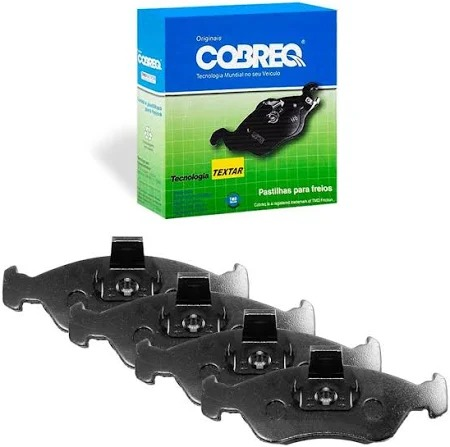
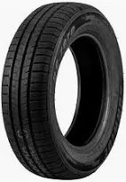

Catálogo de Peças
Confira algumas das peças disponíveis em nossa loja:
| Imagem | Nome da Peça | Descrição | Preço |
|---|---|---|---|
|  | Pastilha de Freio | Pastilha dianteira para diversos modelos de veículos. | R$ 120,00 |
| Bateria Moura 60Ah | Bateria automotiva com 18 meses de garantia. | R$ 520,00 | |
.jpeg) |
Filtro de Óleo | Filtro para motores de 1.0 a 2.0 litros. | R$ 35,00 |
|  | Pneu 175/65 R14 | Pneu durável, ótima aderência e conforto na direção. | R$ 310,00 |